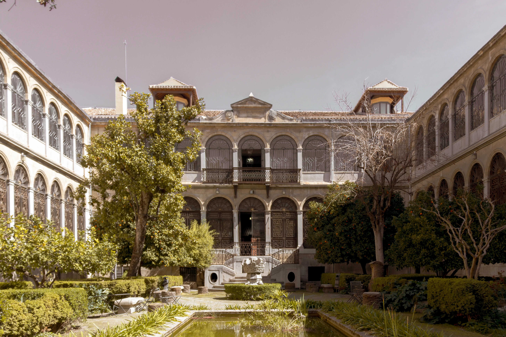
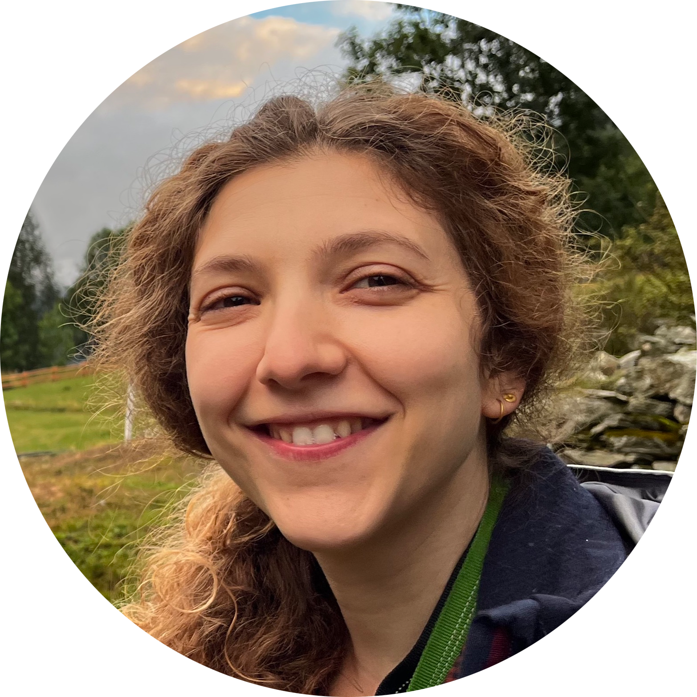
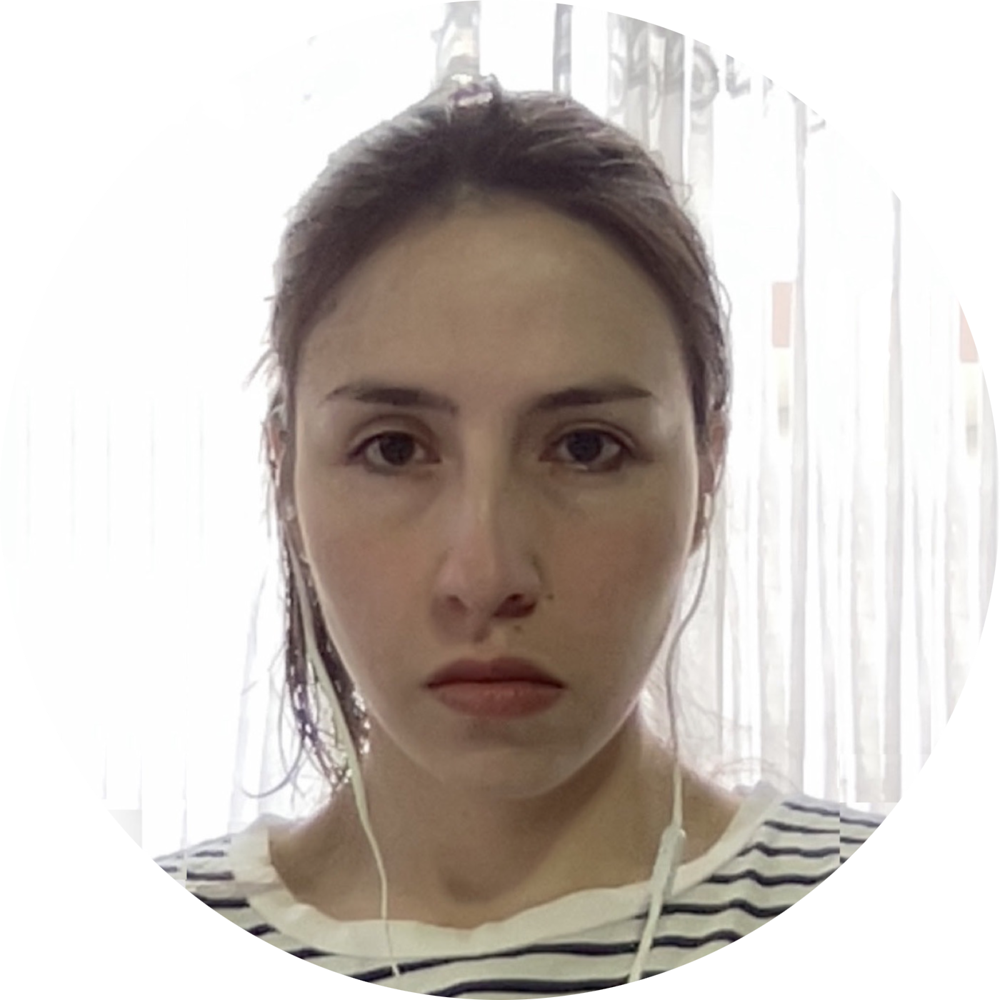
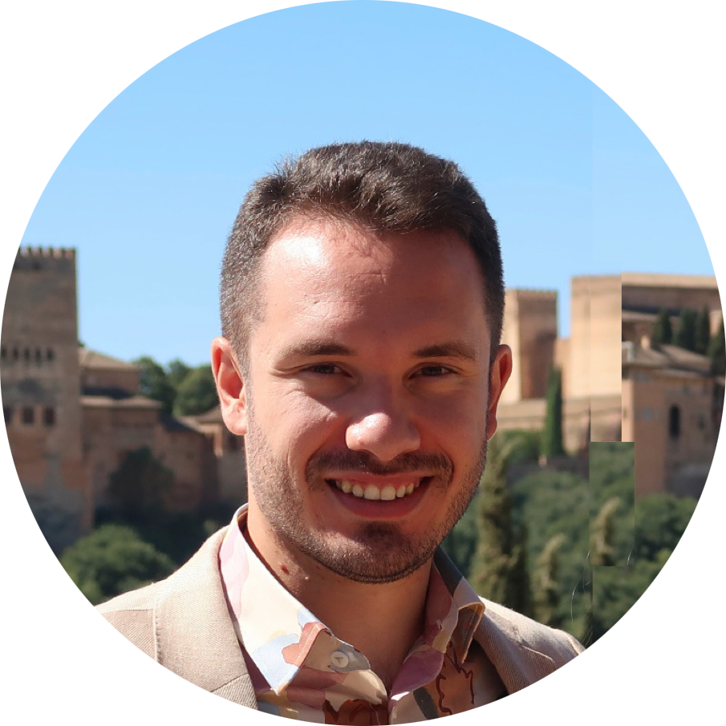
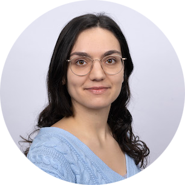
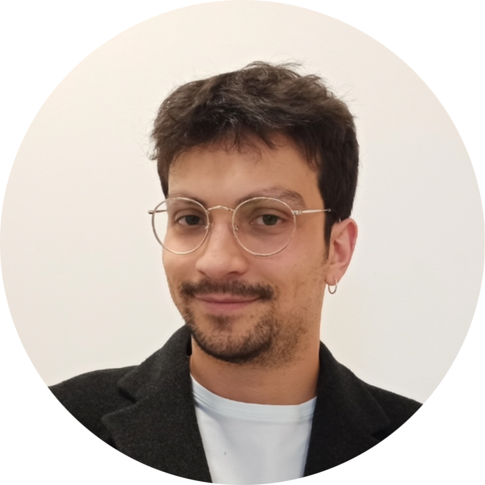
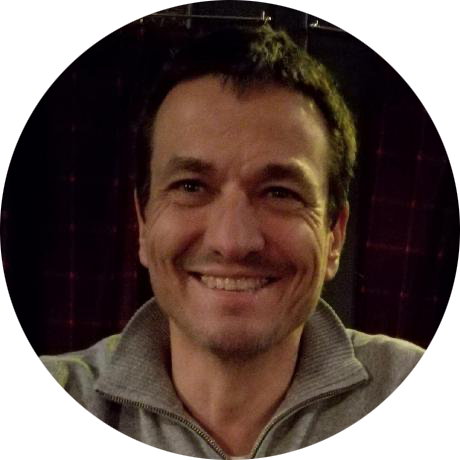

The conference starts Wednesday morning, October 4, and ends Friday afternoon, October 6.
Abstract submission deadline: May 31, 2023. (Acceptance notification: June 30, 2023.)
Poster submission deadline: July 31, 2023.
Registration for the event is FREE and is open now! Until Agust 31, 2023 .
Financial support for participants
Student members of the Association for Symbolic Logic (ASL) may apply for travel support at ASL. Note that such applications have to be submitted at least 3 months prior to the meeting (October 4). For precise instructions on how to apply for ASL support please see the ASL website. Notice that the deadline for the finantial support aplication is July 4, 2023.
The Host Institution
The University of Granada was officially founded in 1531 and is considered one of Spain’s
historic universities. The University of Granada is ranked among the top 10 in Spain and
among the top 5 in Mathematics. This University is, for several years, the first European
University in receiving and sending students in the Erasmus programme of European mobility.
The University currently has around 57,000 students and 27 teaching centres.
This congress will take place fundamentally at IMAG (The Math Institute of the University of Granada), institute with a great prestige in mathematics and recently awarded by the
Spanish Research Agency with the prestigious “Maria de Maeztu” 2020 Seals of Excellence in
Mathematics.

Tourism Information
Granada is a city with a wide range of areas to visit. By far the best known monument is La
Alhambra, it consists of a complex of ancient palaces, gardens and fortresses on the outskirts
of the city. Inside are some of the most interesting structures such as The Generalife and the
Palace of Charles V. At the same time there are several areas to stroll around with one of the
most beautiful views such as El Albayzin or El Paseo de los Tristes. There are also other areas
to visit such as the Cathedral, the Archaeological and Ethnological Museum or the Museum of
Fine Arts.
Travel information
- From Granada airport. The airport is 17 km from downtown. Correspondences between
Granada and its airport can be done by taxi or bus. The cab fare is about 30-35€. There
is a 3€ bus airport-downtown (line 245), with different stops. The nearest one to IMAG
is the eighth stop, at “Avda. Constitucion Hotel Cóndor”, from where IMAG is just at 10
min of walking distance.
- From Málaga airport. The bus company Alsa has a service connecting directly the airport
of Málaga with the city of Granada. From this airport, there are frequent connections
(approx. one per hour). For more information, please visit the Alsa website. Another
available connection is through the bus station in Málaga, from where one can find buses
leaving to Granada each hour. These buses arrive at the bus station in Granada, from
where one can take a taxi to downtown (about 10€) or a city bus (lines SN2 or SN5) in
order to arrive to the institute (see here for a map of the city buses in Granada).
- By high speed train. There are daily connections to and from Granada, with Madrid and
Barcelona. The train station in Granada is downtown, at 10 minutes of walking distance
from IMAG.

Amanda Vidal.
(Artificial Intelligence Research Institute IIIA)

Martha Catalina Torres Pachón
(University of Barcelona)

Juan Manuel Santiago Suárez
(Université Paris Cité and
Politecnico di Torino)

Daira Pinto Prieto
(University of Amsterdam)

José S. Santiago Villanueva
(University of Granada and
University of Jaén)

Pedro Abelardo Garcia Sanchez
(University of Granada)
The conference will take place at 'Instituto de Matemáticas de la UGR, IMAG'. The talks marked with ( ⇋ ) will take place at 'Facultad de Traducción e Interpretación de Granada'. See the respective locations here.
Talks Information
| Invited Speakers |
| Maria Jose Frapolli: Logic in Mathematics. |
| Jordi López Abad: Fraïssé Banach spaces. |
| Nina Gierasimczuk: |
| Julien Murzi: |
| Tomás Ibarlucía: An invitation to continuous logic. |
| Amanda Vidal: Modal fuzzy logics: diverging paths. |
| Contribute Talks |
| Pedro del Valle-Inclan: Carnap's Problem, Definability and Compositionality. |
| Salvatore Scamperti and Luca Motto Ros: Universality properties of graph homomorphism: one construction to prove them all. |
| Damiano Fornasiere and Tommaso Moraschini: Degrees of incompleteness of implicative logics: the trichotomy theorem. |
| Margarete Ketelsen and Simone Ramello: Definability of henselian valuations in positive characteristic. |
| John Lindqvist: Modal Logic in the Logic of Sentential Operators. |
| Aleksi Anttila, Rosalie Iemhoff and Fan Yang: Deep Inference Sequent Calculi for Team-based Logics. |
| Mahan Vaz and Marcelo Esteban Coniglio: Deontic logic semantics: from Kripke frames to swap structures. |
| Curial Gallart Rodríguez: High analogs of Martin's Axiom and combinatorics on $\omega_2$. |
| Mina Young Pedersen: Hybrid Relevant Logic. |
| Miguel Martins and Tommaso Moraschini: Locally Finite Bi-Intermediate Logics of Trees. |
| Elio La Rosa: Epsilon Modal Logics. |
| Andrea Sabatini: Abduction as deductive saturation. |
| Pietro Vigiani: Non-classical Reasoning with Update-based Implication. |
| Azul Lihuen Fatalini: Paradoxical sets and the Axiom of Choice. |
| Filip Jankovec: From Abelian logic to Łukasiewicz unbound. |
| Poster Session 1 |
| Salvatore Scamperti - Luca Motto Ros, John Lindqvist, Damiano Fornasiere, Aleksi Anttila - Rosalie Iemhoff - Fan Yang, Simone Ramello - Margarete Ketelsen, Pedro del Valle Inclán, Antonio Casares, Chun yu Lin, Lisa Michajlova, Luis Felipe Bartolo, Thibaut Kouptchinsky, Hrafn Valtyr Oddsson, Pinelopi Stylianopoulou. |
| Poster Session 2 |
| Curial Gallart Rodriguez, Andrea Sabatini, Elio La Rosa, Pietro Vigiani, Mina Young Pedersen, Filip Jankovec, Fatalini, Azul Lihuen, Niccolò Rossi, Alexander De Klerck, Thomas Randriamahazaka, Grigorii Stepanov, Ludovico Fusco - Francesco Paoli, Johan Girardot. |
Location of the Buildings
Registration is now closed.
Contact us : phdsinlogic@gmail.com
If you aim to participate as a speaker in the Phds in Logic XIV conference, please submit your abstrac by Easy Chair
Abstract Submission is now closed.
Poster submission was open Until July 31, 2023. Poster Submission is now closed.
* Submission guidelines: PhD students, master students, and first-year postdocs in logic from disciplines that include but are not limited to computer science, mathematics, and philosophy are invited to submit an extended abstract on their research.
Extended abstracts (up to 1 page not including references) are to be prepared using the EasyChair class style. The scientific committee will review all submitted abstracts and determine which ones will be accepted for presentation at the conference. Depending on the number of accepted abstracts and the conference schedule, some presentations will be in the form of short talks, while others will be presented as posters. The committee will make the final decision on the presentation format for each accepted abstract.
This event has received funding from the European Union’s Horizon 2020 research and innovation programme under the Marie Skłodowska-Curie grant agreement No 101007627